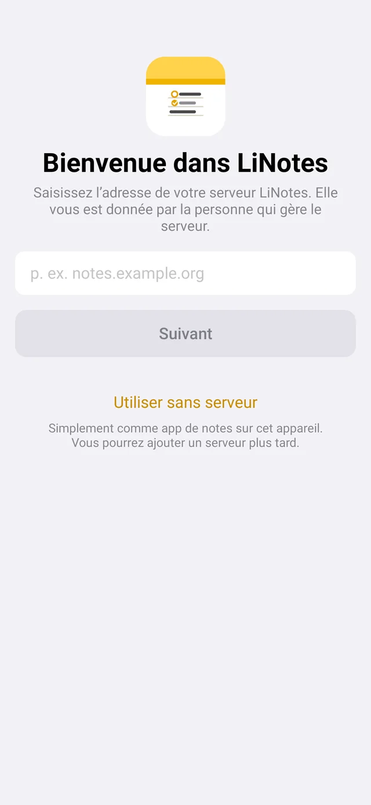

LiNotes
LiNotesComment ça marche
Vos appareils chiffrent tout avant que cela ne quitte la maison. Le serveur ne fait que conserver ces paquets chiffrés et les transmettre à vos autres appareils. Même vous, en tant qu’exploitant, ne pouvez pas lire les notes des autres.
LiNotes fonctionne aussi sans serveur : choisissez « Utiliser sans serveur » au premier lancement. Vous pourrez ajouter un serveur plus tard, vos notes suivront.
Ce qu’il vous faut
- Un petit ordinateur toujours allumé, idéalement un Raspberry Pi 4 ou 5 sous Raspberry Pi OS. Tout autre ordinateur sous Debian ou Ubuntu convient aussi.
- Une adresse sur Internet qui pointe vers votre connexion, par exemple gratuitement via DynDNS (goip.de, DuckDNS, l’adresse MyFRITZ! de votre FRITZ!Box …).
- L’accès à votre routeur pour ouvrir deux ports.
- Un terminal avec les droits
sudosur l’ordinateur.
1 · Une adresse sur Internet
Vos appareils doivent trouver le serveur aussi en déplacement. Il vous faut pour cela un nom comme notizen.example.org qui pointe toujours vers votre connexion, même si votre adresse IP change.
- Créer un nomCréez un nom chez un fournisseur DynDNS, p. ex.
familie-notizen.goip.de. Beaucoup de fournisseurs sont gratuits. - Le tenir à jourLe plus simple est de le saisir dans le routeur (FRITZ!Box en allemand : Internet → Freigaben → DynDNS). Le routeur signale alors lui-même chaque nouvelle adresse IP.
- VérifierSur un ordinateur, tapez
ping familie-notizen.goip.de. Votre IP Internet actuelle doit répondre.
2 · Ouvrir le routeur
Pour que le certificat HTTPS et les apps fonctionnent, votre routeur redirige deux ports vers le serveur. Exemple : une FRITZ!Box avec interface en allemand :
- Ouvrir les partagesInternet → Freigaben → Portfreigaben (partages de ports) → « Gerät für Freigaben hinzufügen » (ajouter un appareil) et sélectionner le Raspberry Pi.
- Créer deux partages« Neue Freigabe » (nouveau partage) → Portfreigabe → serveur HTTP (port 80) et serveur HTTPS (port 443). Avec IPv6, activez aussi « IPv6 freigeben » (partager via IPv6).
- EnregistrerLes autres ports restent fermés, LiNotes n’a besoin que de ceux-ci.
3 · Installer en une commande
Connectez-vous au Raspberry Pi (directement ou par SSH) et saisissez cette commande. Remplacez le domaine par le vôtre :
$ curl -fsSL https://lisoftware.de/linotes/install-server.sh | sudo bash -s familie-notizen.goip.de
Données sur un disque dur USB ? Ajoutez le chemin : … | sudo bash -s familie-notizen.goip.de /media/usb/linotes
Le script télécharge le serveur, vérifie la somme de contrôle et installe tout. Au bout de quelques minutes, vous voyez :
LiNotes-Server 2.1.0 wird geladen … 1/6 Pakete 2/6 Benutzer und Verzeichnisse 3/6 Python-Umgebung 4/6 Dienst 5/6 nginx und HTTPS Successfully deployed certificate for familie-notizen.goip.de 6/6 Prüfen Der Server läuft. Fertig! Serveradresse für die Apps: familie-notizen.goip.de Erster Einladungscode: 7F3A-C21E-94B0 In der App die Serveradresse eingeben, „Neues Konto erstellen“ wählen und den Code eingeben. Weitere Einladungen gibt es danach direkt in der App.
Sont maintenant en place : le service LiNotes (démarrage automatique), nginx avec certificat HTTPS de Let's Encrypt, une sauvegarde nocturne à 3 h 40 et votre premier code d’invitation. Le code ci-dessus n’est qu’un exemple.
4 · Connecter l’app
- Saisir l’adresse du serveurOuvrez LiNotes et saisissez votre domaine, p. ex.
familie-notizen.goip.de. - Créer un compteChoisissez « Créer un nouveau compte », saisissez le code d’invitation, un nom d’utilisateur et votre nom. Il n’y a pas de mot de passe : votre compte est protégé par une clé qui ne se trouve que sur vos appareils.
- Sauvegarder le fichier de cléL’app vous le rappelle au bout de quelques jours. Avec ce fichier, vous retrouvez vos notes même après la perte de tous vos appareils.
- Autres appareilsSur le deuxième appareil, choisissez « Se connecter avec un autre appareil » et confirmez le code affiché sur le premier appareil, comme avec Signal.

5 · Inviter la famille
Dans l’app sous Réglages → Personnes et invitations (Ubuntu : menu du compte → « Créer un code d’invitation… ») vous obtenez un nouveau code. Transmettez-le. La personne installe LiNotes, saisit l’adresse du serveur et crée son compte avec le code.
Avant de partager quoi que ce soit, vous vous vérifiez une fois mutuellement par code ou code QR. Ensuite, personne ne peut glisser une fausse clé.
Cela fonctionne aussi sur le serveur :
$ sudo -u linotes env LINOTES_DATA=/var/lib/linotes \
/opt/linotes/venv/bin/python -m linotes_server.admin invite
Sauvegarde
Chaque nuit à 3 h 40, le serveur crée une copie cohérente de la base de données et de tous les fichiers dans /var/lib/linotes-backup (ou à côté de votre dossier de données). Les copies de la base sont conservées 14 jours.
Mise à jour
Exécutez simplement la même commande une nouvelle fois. Le script peut tourner plusieurs fois : il installe la nouvelle version, conserve vos données et redémarre le service. Les apps ne remarquent qu’une courte pause.
$ curl -fsSL https://lisoftware.de/linotes/install-server.sh | sudo bash -s familie-notizen.goip.de
En cas de problème
« HTTPS konnte nicht eingerichtet werden » (HTTPS n’a pas pu être configuré)
Le domaine pointe-t-il vraiment vers votre connexion (étape 1), et les ports 80 et 443 sont-ils ouverts (étape 2) ? Exécutez ensuite simplement sudo certbot --nginx -d votre-domaine.
L’app ne trouve pas le serveur
Ouvrez https://deine-domain/api/health dans le navigateur. S’il affiche "ok" : true, tout fonctionne. Saisissez alors l’adresse dans l’app sans https:// et sans barre oblique.
Le service ne démarre pas
$ sudo systemctl status linotes $ sudo journalctl -u linotes -n 50
Ça marche à la maison, pas en déplacement
Il manque alors généralement le partage de ports ou l’adresse DynDNS n’est pas à jour. Depuis le téléphone en données mobiles (Wi-Fi coupé), testez l’adresse https://votre-domaine/api/health.
Sans la commande unique
Vous préférez faire chaque étape vous-même ? Téléchargez le paquet, vérifiez-le et lancez l’installateur à la main :
$ wget https://lisoftware.de/linotes/download/linotes-server-2.1.0.tar.gz \ https://lisoftware.de/linotes/download/SHA256SUMS $ sha256sum --ignore-missing -c SHA256SUMS $ tar xzf linotes-server-2.1.0.tar.gz $ sudo linotes-server/install.sh familie-notizen.goip.de
Le code source de l’installateur est dans le paquet (install.sh). Vous pouvez lire avant exactement ce qu’il fait.